Brahma Muhurta begins before dawn. Sandhya Kala arrives at dusk. These are not just elaborate names — they are time windows offering a unique opportunity for spiritual growth, honored by yoga practitioners for millennia.
In practice, however, pinpointing the exact timing of these moments is far from easy.
"The sacred calendar already exists. With this product, my goal is to bring its logic to the surface, cutting through the hustle of daily tasks — without the need to open multiple tabs and manually crunch the time calculations."
The personal insight that defined the product visionInterviewed practitioners described the same pattern: they knew the dates mattered, they had the intent to observe them — but nothing in their phone reflected that intent.
Three user archetypes emerged from the survey of 24 active Isha Foundation practitioners:
Sacred Timing is designed primarily for the first two archetypes — but the widget's zero-effort model naturally serves all three.
Most calendar apps require you to open them. But sacred time windows are brief — Brahma Muhurta lasts just 48 minutes. If a user has to navigate through an app, they've already lost the moment.
I designed the home screen widget as the primary daily interface. The event name is centred and immediately readable, with left and right arrows for cycling through events using clear tap targets (swipe gestures are unsupported in iOS widgets). A pulsing green indicator shows at a glance whether an event is ongoing. The date header allows navigation to other days, and a persistent "Today" button snaps the user back instantly.
Applying a serif font to all text created visual clutter and made the widget feel like a static document rather than a functional tool. By restricting Georgia to event names and using a system sans-serif for all UI elements, I created a sharp visual contrast.
The primary events stand out, while the supporting data (like live timers) remains clean and highly readable at a glance.
The widget exists in two distinct visual states. By default, it maintains a lower opacity, blending quietly into the wallpaper and reducing visual noise. The moment the user taps to navigate events or days, it enters an "active state," increasing opacity to full — providing instant feedback and bringing content into sharp focus. Once the interaction is complete, it resets to its quiet default.
This creates a natural rhythm: the widget steps back when not needed, and steps forward when it is.
Early designs included bell icons on every event row for quick toggling. However, I realized this added unnecessary visual noise and reduced a mindful tool to a generic checklist.
I removed these quick toggles entirely. Notification settings now live exclusively inside the event detail panel — a deliberate separation of contexts: the widget is for quick scanning and global actions, while the app requires an intentional step to mindfully configure preferences.
A mindful app should let users pause its specific reminders without relying on system-wide "Do Not Disturb" or digging through complex settings. I placed a single mute toggle in the expanded widget's bottom bar for instant access. One tap silences all app notifications; another unmutes them. Future iterations will add contextual durations like "for 1 hour". To avoid OS conflicts with long-press gestures, I used a direct visual toggle for immediate, practical control.
Interaction design · Platform constraintsThe widget is the heart of Sacred Timing. It lives on the home screen and never requires the app to be opened for daily use.
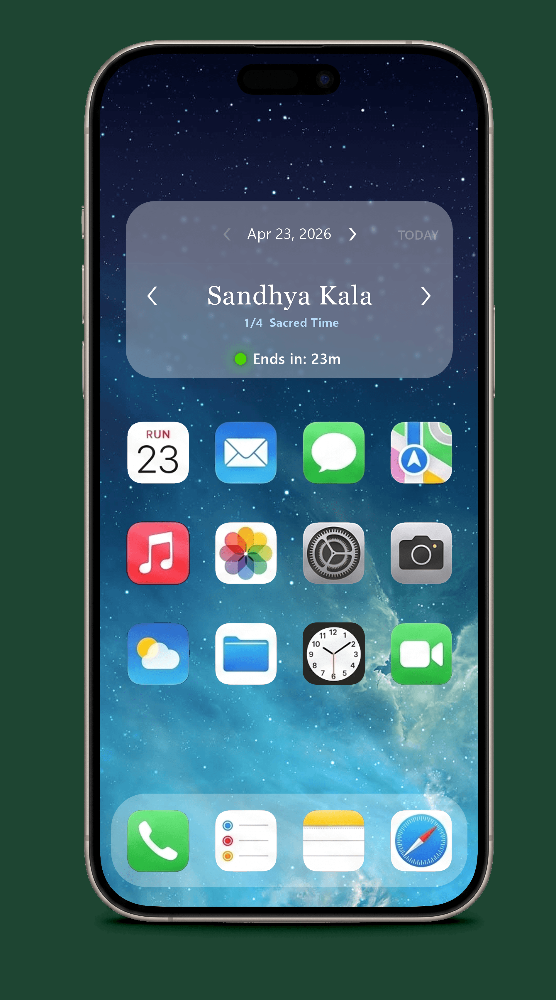
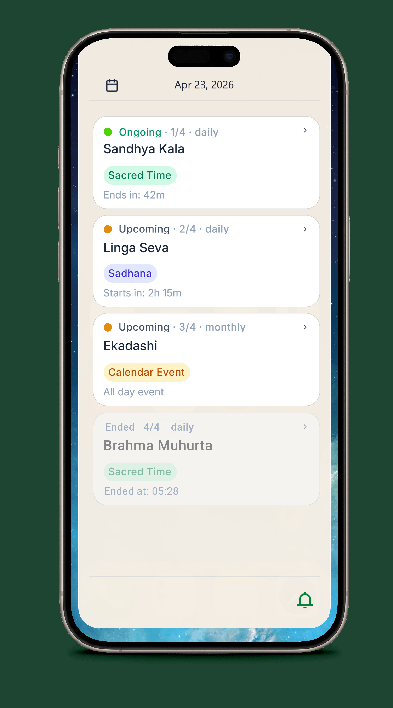
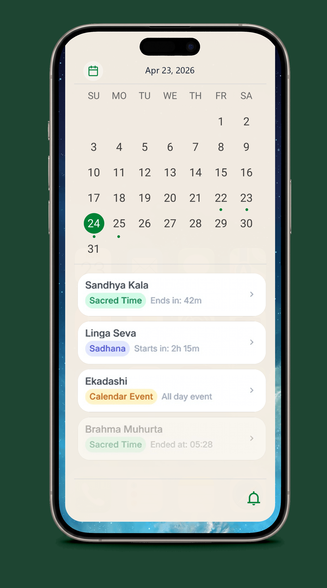
Collapsed shows only Ongoing + Upcoming — ended events are hidden for a clean, actionable view. Expanded reveals ended events above the scroll position; auto-scroll lands on the first Ongoing event. Calendar mode switches the header navigation from individual days to full months, giving a broader planning view without leaving the widget.
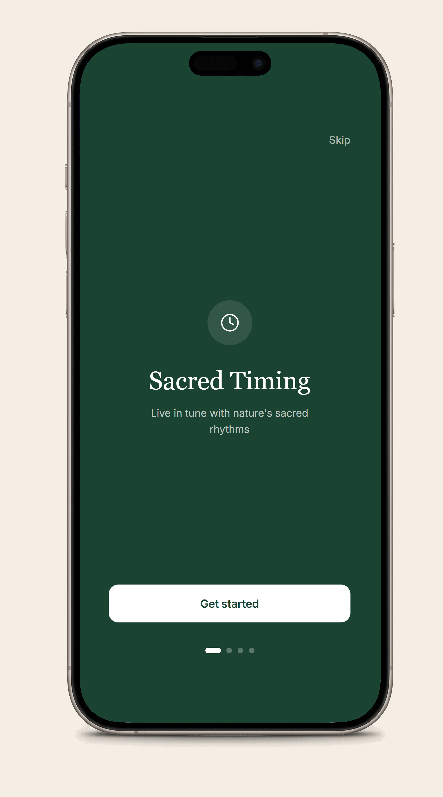
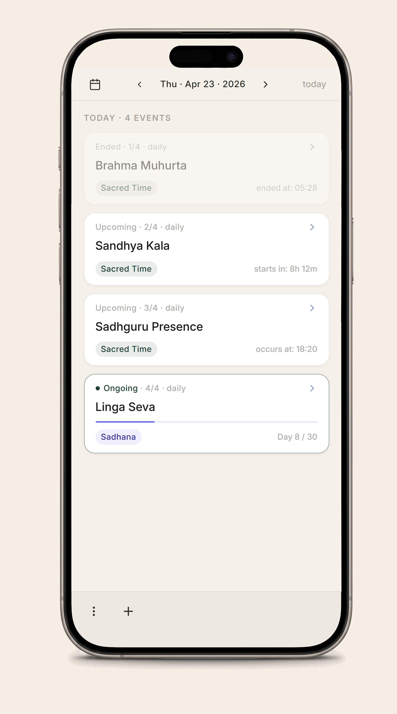
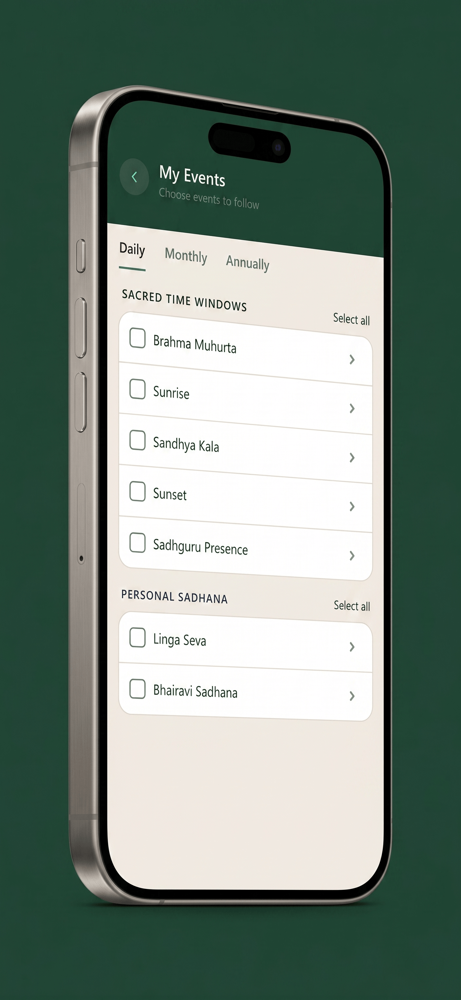
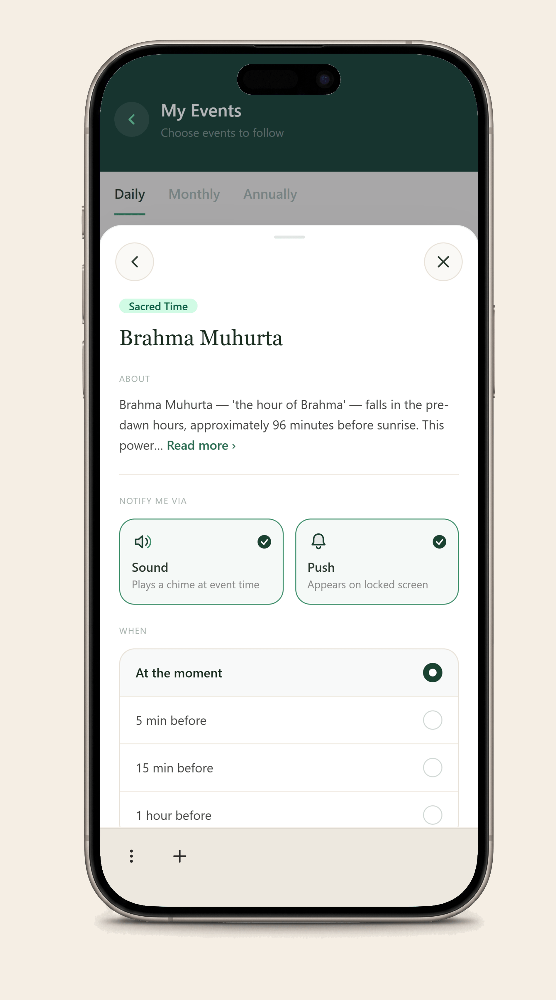
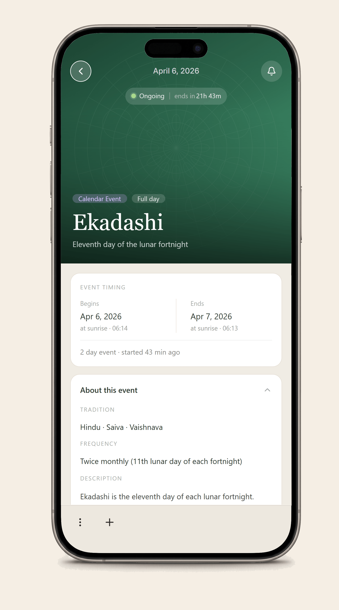
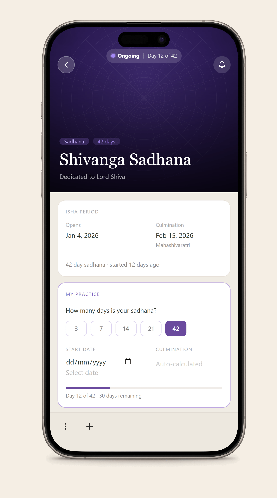
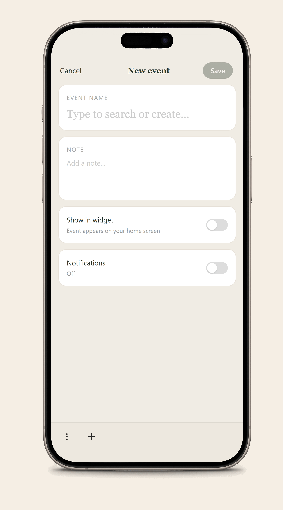
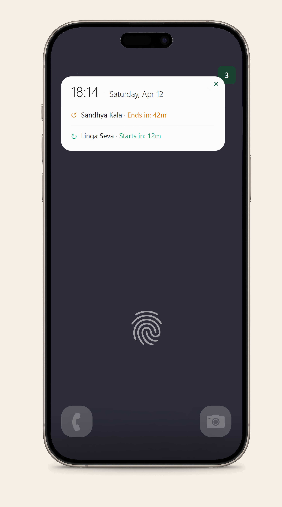
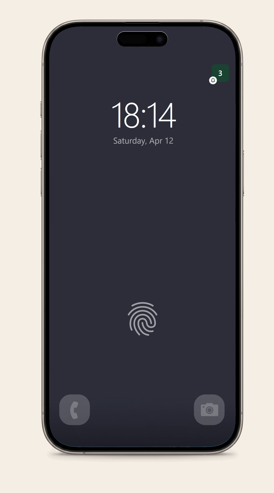